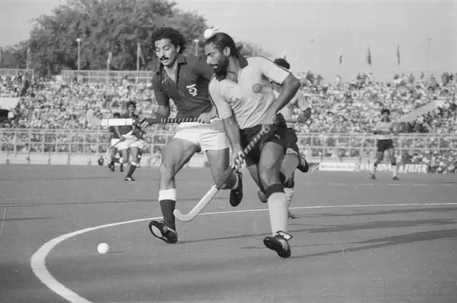
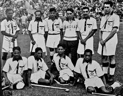

HOCKEY--Field hockey is a team sport structured in standard hockey format, in which each team plays with ten outfield players and a goalkeeper. Teams must drive a round hockey ball by hitting it with a hockey stick towards the rival team's shooting circle and then into the goal. The match is won by the team that scores the most goals. Matches are played on grass, watered turf, artificial turf, synthetic field, or indoor boarded surface. The stick is made of wood, carbon fibre, fibreglass, or a combination of carbon fibre and fibreglass in different quantities. The stick has two sides; one rounded and one flat; only the flat face of the stick is allowed to progress the ball. During play, goalkeepers are the only players allowed to touch the ball with any part of their body. A player's hand is considered part of the stick if holding the stick. If the ball is "played" with the rounded part of the stick (i.e. deliberately stopped or hit), it will result in a penalty (accidental touches are not an offence if they do not materially affect play). Goalkeepers often have a different design of stick; they also cannot play the ball with the round side of their stick. The modern game was developed at public schools in 19th century England and it is now played globally.[1] The governing body is the International Hockey Federation (FIH), called the Fédération Internationale de Hockey in French. Men and women are represented internationally in competitions including the Olympic Games, World Cup, FIH Pro League, Junior World Cup and in past also World League, Champions Trophy . Many countries run extensive junior, senior, and masters club competitions. The FIH is also responsible for organizing the Hockey Rules Board and developing the sport's rules. The sport is known simply as "hockey" in countries where it is the more common form of hockey. The term "field hockey" is used primarily in Canada and the United States where "hockey" more often refers to ice hockey. In Sweden, the term landhockey is used. A popular variant is indoor field hockey, which differs in a number of respects while embodying the primary principles of hockey.Most hockey field dimensions were originally fixed using whole numbers of imperial measures. Metric measurements are now the official dimensions as laid down by the International Hockey Federation (FIH) in the Rules of Hockey.[22] The pitch is a 91.4 m × 55 m (100.0 yd × 60.1 yd) rectangular field. At each end is a goal 2.14 m (7 ft) high and 3.66 m (12 ft) wide, as well as lines across the field 22.90 m (25 yd) from each end-line (generally referred to as the 23-metre lines or the 25-yard lines) and in the center of the field.

HISTORY-- According to the International Hockey Federation (FIH), "the roots of hockey are buried deep in antiquity".[2] There are historical records which suggest early forms of hockey were played in Egypt and Persia c. 2000 BC, and in Ethiopia c. 1000 BC. Later evidence suggest that the ancient Greeks, Romans and Aztecs all played hockey-like games.[2] In Ancient Egypt, there is a depiction of two figures playing with sticks and ball in the Beni Hasan tomb of Khety, an administrator of Dynasty XI.[3] In Ancient Greece, there is a similar image dated c. 510 BC, which may have been called Κερητίζειν (kerētízein) because it was played with a horn (κέρας, kéras in Ancient Greek) and a ball.[4] Researchers disagree over how to interpret this image. It could have been a team or one-on-one activity (the depiction shows two active players, and other figures who may be team-mates awaiting a face-off, or non-players waiting for their turn at play). Billiards historians Stein and Rubino believe it was among the games ancestral to lawn-and-field games like hockey and ground billiards, and near-identical depictions appear in later European illuminated manuscripts and other works of the 14th through 17th centuries, showing contemporary courtly and clerical life.[3] In East Asia, a similar game was entertained, using a carved wooden stick and ball, prior to 300 BC.[5] In Inner Mongolia, China, the Daur people have for about 1,000 years been playing beikou, a game with some similarities to field hockey.[6] A similar field hockey or ground billiards variant, called suigan, was played in China during the Ming dynasty (1368–1644, post-dating the Mongol-led Yuan dynasty).[3] A game similar to field hockey was played in the 17th century in Punjab state in India under name khido khundi (khido refers to the woolen ball, and khundi to the stick).[7] In South America, most specifically in Chile, the local natives of the 16th century used to play a game called Chueca, which also shares common elements with hockey.[8] In Northern Europe, the games of hurling (Ireland) and Knattleikr (Iceland), both team ball games involving sticks to drive a ball to the opponents' goal, date at least as far back as the Early Middle Ages. By the 12th century, a team ball game called la soule or choule, akin to a chaotic and sometimes long-distance version of hockey or rugby football (depending on whether sticks were used in a particular local variant), was regularly played in France and southern Britain between villages or parishes. Throughout the Middle Ages to the Early Modern era, such games often involved the local clergy or secular aristocracy, and in some periods were limited to them by various anti-gaming edicts, or even banned altogether.[3]